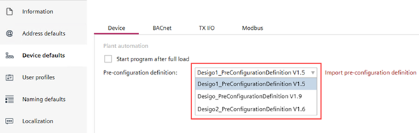
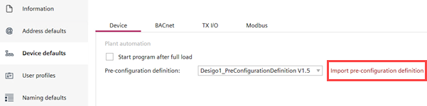

预配置文件
您可以选择现有的预配置文件Settings > Device default > Device。预配置定义文件用于配置所选项目中的库内容。
- The pre-configuration files are sorted by description and only the highest version of each file description is listed in the drop-down list.
- Each project contains only one active pre-configuration file at a time.
Selecting a pre-configuration file

- Go to Settings > Device default > Device.
- In the Pre-configuration definition field, select an existing pre-configuration file from the drop-down list.
- To import a user-defined pre-configuration file, click Import pre-configuration definition.

- Select the required pre-configuration definition file from your desktop and click Open.
- The pre-configuration file displays at the top of the drop-down list.
Replacing a manually imported pre-configuration file with an existing pre-configuration file
- You have selected an existing pre-configuration file or imported a pre-configuration file.
- Go to Settings > Device default > Device.
- In the Pre-configuration definition field, select another pre-configuration file to replace the current selection.
- A Replace pre-configuration definition dialog box displays with the old and new pre-configuration file details, requesting the user to confirm the replacement action.
- Click OK.